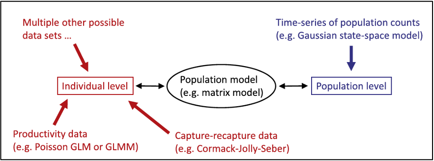
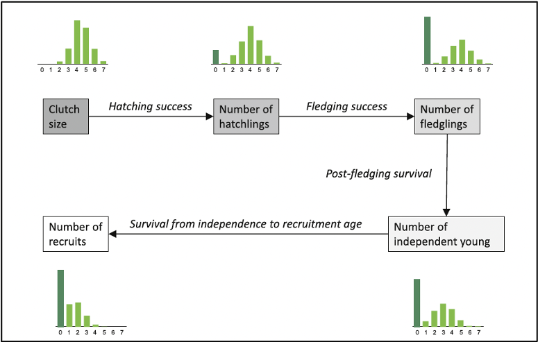
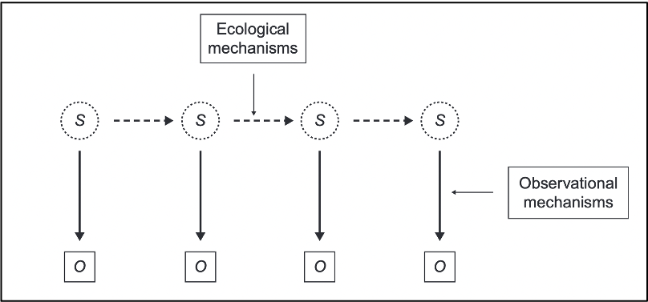
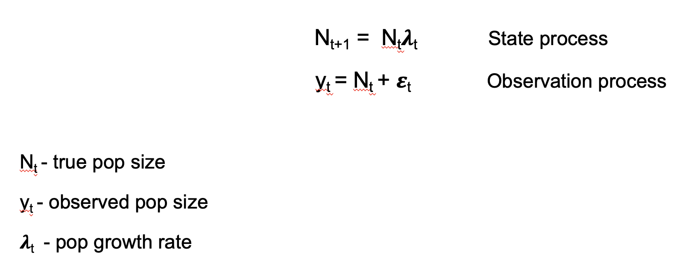
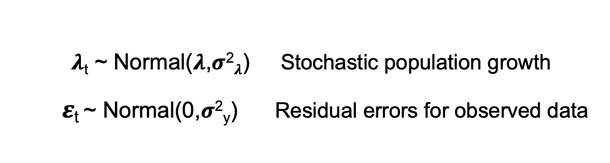
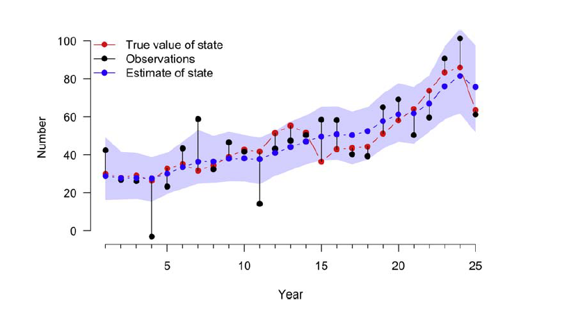

Click here to follow along in R: IPM_lecture.R
The goal of population models is to understand the interactions that lead to changes in population size and structure. Population dynamics is the summation of all losses and gains in a population through recruitment, survival, emigration, and immigration. So if population growth rates are changing, there is a change in one of these demographic rates.
The size of a population (N) can be expressed by the following equation: N =S+R+I-E where population size in year t is given by the population size surviving the year before (S), plus the number of new individuals resulting from local recruitment (R) and immigration (I), minus the number of individuals lost as a result of death and emigration (E).
An integrated analysis in general is a joint analysis of several datasets on different quantities.Inference is based on the joint likelihood. A key element is that one or several parameters are common in several components of the likelihood but collected independently.
Previous analysis method analyzed these data separately
In IPMS: In these models, all available data are analyzed within a single model; the single data likelihoods are used to create the joint likelihood upon which inference is based.
Most IPMs are based on stage-structured models.Defining the life-cycle graph and demographic rates for your study species a crucial part in the development of a stage-structured population model and for construction of an IPM
More precise parameter estimates
Incorporates all sources of uncertainty (process variability and sampling processes)
Allows estimation of more demographic quantities (with caution; Riecke et al. 2019)

Count data (population level) - Population size surveys
Demographic data (individual level) - Survival surveys - Productivity surveys
This tutorial will briefly review very simplified versions of some (but definitely not all!) potential submodels that are typically included in an IPM.
NOTE: The following examples are borrowed from Schaub and Kery (2022)
Reproduction is a key process of any population model. Population models typically require the number of offspring per female and year, which we call “productivity”.
In this example, we show some of the subprocess that make up productivity for birds, but this will not cover all facets of productivity which may look different for different taxa.
Importantly, productivity can be assessed at different stages of the annual cycle.

In this example, we will focus on nest survival and brood size.
The primary goal of nest survival models is the estimation of nest success, which is the probability that at least one fledgling is produced by a nest.
fi - date when the nest is first detected
ji - last date the nest was observed as alive
ki - day when the nest was visited for the last time
xi - whether the nest was alive during the last visit (fail = 0, success = 1)
Active nests must be visited repeatedly
Time intervals between visits do not need to be identical
Estimation of daily survival starts on the day when the nest is discovered
The exact date of failure is unknown, unless the nest is observed daily
Date of failure can be estimated from the model, based on daily survival probabilities
In this example, we have nest data on 181 wrynecks from 2002 to 2006 and analyzed by Geiser et al. (2008). Note that dates are recorded such that day 1 is May 16.
First, explore the data
library(IPMbook); library(jagsUI)
data(wryneck)
str(wryneck)## 'data.frame': 181 obs. of 5 variables:
## $ f : int 49 15 23 23 47 11 23 15 65 2 ...
## $ j : int 53 32 37 40 66 30 37 30 71 18 ...
## $ k : int 53 32 37 40 66 30 37 30 72 18 ...
## $ x : int 1 1 1 1 1 1 1 1 0 1 ...
## $ age: int 16 2 4 2 2 2 5 2 5 2 ...tail(wryneck)## f j k x age
## 176 5 25 25 1 1
## 177 53 56 60 0 1
## 178 9 29 29 1 1
## 179 26 46 46 1 1
## 180 55 75 75 1 1
## 181 20 35 35 1 6As a reading example, nest 177 was detected on day 53 when the nestlings were 1 day old, and it was checked for the last time with nestlings seen alive on day 56. Then, it was checked again on day 60 when the brood was found to have failed (hence, x = 0).
Next, we’ll create daily encounter histories for each nest
# Identify failed broods
fail <- which(wryneck$x==0)
# Create encounter histories
y <- matrix(NA, nrow=length(wryneck$f), ncol=max(wryneck$k))
for (i in 1:length(wryneck$f)){
y[i,wryneck$f[i]] <- 1
y[i,wryneck$j[i]] <- 1
}
for (i in 1:length(fail)){
y[fail[i],wryneck$k[fail[i]]] <- 0
}View encounter histories of two broods 176 and 177:
y[176,]## [1] NA NA NA NA 1 NA NA NA NA NA NA NA NA NA NA NA NA NA NA NA NA NA NA NA 1
## [26] NA NA NA NA NA NA NA NA NA NA NA NA NA NA NA NA NA NA NA NA NA NA NA NA NA
## [51] NA NA NA NA NA NA NA NA NA NA NA NA NA NA NA NA NA NA NA NA NA NA NA NA NA
## [76] NA NA NA NA NA NAy[177,]## [1] NA NA NA NA NA NA NA NA NA NA NA NA NA NA NA NA NA NA NA NA NA NA NA NA NA
## [26] NA NA NA NA NA NA NA NA NA NA NA NA NA NA NA NA NA NA NA NA NA NA NA NA NA
## [51] NA NA 1 NA NA 1 NA NA NA 0 NA NA NA NA NA NA NA NA NA NA NA NA NA NA NA
## [76] NA NA NA NA NA NAIn the encounter history of brood 176 there are NA before the nest was detected and after the nestlings fledged, i.e., the nest was successful. In the model (below) we will define the likelihood in a loop only between the first and last visit and thus NAs outside this loop will not be estimated, nor will they provide any information about daily survival. For nest 177 there are NAs between the last visit when the nest was alive and the visit when the failure was detected, so there is uncertainty about the exact date when the nest failed. The data required to fit the model are these encounter histories, the dates of the first and last visits to each nest, the number of nests and the number of days a brood requires from hatching to fledging (T), which is assumed to be a constant, and is needed to scale daily survival to total nest survival.
We fit a nest survival model where the daily nest survival is a linear function of nestling age. Often daily nest survival increases with nestling age, for instance because nestlings become less sensitive to food shortage, severe weather, or predators. The data bundle contains the age covariables as well as the other needed data and information.
# Bundle data
jags.data <- with(wryneck, list(y=y, f=f, k=k, n.nest=nrow(y), T=21, age=age))
str(jags.data)## List of 6
## $ y : num [1:181, 1:81] NA NA NA NA NA NA NA NA NA NA ...
## $ f : int [1:181] 49 15 23 23 47 11 23 15 65 2 ...
## $ k : int [1:181] 53 32 37 40 66 30 37 30 72 18 ...
## $ n.nest: int 181
## $ T : num 21
## $ age : int [1:181] 16 2 4 2 2 2 5 2 5 2 ...The likelihood of the nest survival model is similar to that of the Corack-Jolly-Seber model, except that here we assume perfect detection and hence have no observation submodel. As always, the model also has the priors and linear models section where we define our linear models for the primary parameters and the chosen priors. At the end of the code, we compute nest success as a derived parameter that is a function of daily survival and duration T.
# Write JAGS model file
cat(file="model13.txt", "
model {
# Priors and linear models
for (i in 1:n.nest){
for (t in f[i]:(k[i]-1)){
phi[i,t] <- phia[age[i] + t - f[i]]
} #t
} #i
for (a in 1:T){
phia[a] <- ilogit(alpha + beta * a)
}
alpha ~ dnorm(0, 0.001)
beta ~ dnorm(0, 0.001)
# Likelihood
for (i in 1:n.nest){
for (t in (f[i]+1):k[i]){
y[i,t] ~ dbern(phi[i,t-1] * y[i,t-1])
} #t
} #i
# Derived parameter: nest success
nu <- prod(phia[1:T])
}
")
# Initial values
inits <- function(){list(alpha=runif(1, 4, 5), beta=runif(1, 0, 0.1))}
# Parameters monitored
parameters <- c("phia", "nu", "alpha", "beta")
# MCMC settings
ni <- 3000; nb <- 1000; nc <- 3; nt <- 1; na <- 1000
# Call JAGS from R (ART 1 min) and check convergence
out16 <- jags(jags.data, inits, parameters, "model13.txt", n.iter=ni, n.burnin=nb, n.chains=nc,
n.thin=nt, n.adapt=na, parallel=TRUE)##
## Processing function input.......
##
## Done.
##
## Beginning parallel processing using 3 cores. Console output will be suppressed.
##
## Parallel processing completed.
##
## Calculating statistics.......
##
## Done.#traceplot(out16) # Not shown
print(out16, 3)## JAGS output for model 'model13.txt', generated by jagsUI.
## Estimates based on 3 chains of 3000 iterations,
## adaptation = 1000 iterations (sufficient),
## burn-in = 1000 iterations and thin rate = 1,
## yielding 6000 total samples from the joint posterior.
## MCMC ran in parallel for 0.334 minutes at time 2023-12-06 11:02:30.768117.
##
## mean sd 2.5% 50% 97.5% overlap0 f Rhat n.eff
## phia[1] 0.971 0.008 0.954 0.972 0.985 FALSE 1.000 1.003 783
## phia[2] 0.974 0.007 0.959 0.974 0.985 FALSE 1.000 1.003 797
## phia[3] 0.976 0.006 0.964 0.976 0.986 FALSE 1.000 1.003 830
## phia[4] 0.978 0.005 0.967 0.978 0.986 FALSE 1.000 1.003 895
## phia[5] 0.979 0.004 0.971 0.980 0.986 FALSE 1.000 1.002 1021
## phia[6] 0.981 0.003 0.974 0.981 0.987 FALSE 1.000 1.002 1272
## phia[7] 0.982 0.003 0.976 0.982 0.988 FALSE 1.000 1.001 1830
## phia[8] 0.984 0.003 0.978 0.984 0.988 FALSE 1.000 1.000 3349
## phia[9] 0.985 0.002 0.980 0.985 0.989 FALSE 1.000 1.000 6000
## phia[10] 0.986 0.002 0.981 0.986 0.990 FALSE 1.000 1.000 6000
## phia[11] 0.987 0.002 0.982 0.987 0.991 FALSE 1.000 1.000 6000
## phia[12] 0.988 0.002 0.983 0.988 0.992 FALSE 1.000 1.000 6000
## phia[13] 0.989 0.002 0.984 0.989 0.993 FALSE 1.000 1.001 3565
## phia[14] 0.989 0.002 0.984 0.990 0.994 FALSE 1.000 1.001 2269
## phia[15] 0.990 0.002 0.985 0.990 0.994 FALSE 1.000 1.001 1674
## phia[16] 0.991 0.003 0.985 0.991 0.995 FALSE 1.000 1.002 1346
## phia[17] 0.991 0.003 0.986 0.992 0.996 FALSE 1.000 1.002 1142
## phia[18] 0.992 0.003 0.986 0.992 0.996 FALSE 1.000 1.003 1006
## phia[19] 0.993 0.003 0.986 0.993 0.997 FALSE 1.000 1.003 908
## phia[20] 0.993 0.003 0.987 0.993 0.997 FALSE 1.000 1.004 835
## phia[21] 0.993 0.003 0.987 0.994 0.997 FALSE 1.000 1.004 779
## nu 0.733 0.036 0.660 0.734 0.801 FALSE 1.000 1.000 6000
## alpha 3.489 0.320 2.899 3.483 4.143 FALSE 1.000 1.005 559
## beta 0.077 0.032 0.016 0.077 0.140 FALSE 0.993 1.004 587
## deviance 111.794 21.447 71.776 110.935 155.855 FALSE 1.000 1.000 5180
##
## Successful convergence based on Rhat values (all < 1.1).
## Rhat is the potential scale reduction factor (at convergence, Rhat=1).
## For each parameter, n.eff is a crude measure of effective sample size.
##
## overlap0 checks if 0 falls in the parameter's 95% credible interval.
## f is the proportion of the posterior with the same sign as the mean;
## i.e., our confidence that the parameter is positive or negative.
##
## DIC info: (pD = var(deviance)/2)
## pD = 230 and DIC = 341.759
## DIC is an estimate of expected predictive error (lower is better).As expected, there is a slight but clear increase with nestling age in the daily nest survival probabilities. The coefficient of age (beta) is positive indicating that nest failure becomes less likely as nestlings get closer to fledging. Overall success during the nestling stage is estimated at 0.73, which means that about three of four nests with hatched young produce at least one fledgling. This model offers great flexibility in modeling all sorts of covariate effects. For example, we can include year effects if the data were collected in different years, and the yearly parameters can be treated as either fixed or random. Individual random effects could also be included, e.g., if some nest boxes were repeatedly occupied and we may want to account for possible nonindependence due to location or parent ID. Daily nest survival could also be modeled as a function of temporalor spatial covariates (e.g., territory quality).
We will look at two model options for brood size (but there are many other options):
Note: we can fit these two completely separate models inside the same JAGS model statement.
First, we will simulate a brood size data set for illustration:
# Choose constants in simulation
nbrood <- 1000 # Number of broods with young counted
brood.mean <- 1.5 # Average brood size
sd.brood <- 0.3 # log-linear brood random effect
# Draw Poisson random numbers
set.seed(24)
expNyoung <- exp(log(brood.mean) + rnorm(nbrood, 0, sd.brood))
C <- rpois(nbrood, expNyoung)
table(C)## C
## 0 1 2 3 4 5 6 7 8
## 231 330 237 134 39 16 7 3 3We call the count of young “C”. When fitting two models to the same data set in a single JAGS model statement we need to make a copy of that data set.
# Data bundle
jags.data <- list(C1=C, sumC1=sum(C), C1copy=C, nbrood=nbrood)
str(jags.data)## List of 4
## $ C1 : int [1:1000] 0 0 1 1 4 1 0 2 0 1 ...
## $ sumC1 : int 1529
## $ C1copy: int [1:1000] 0 0 1 1 4 1 0 2 0 1 ...
## $ nbrood: num 1000library(jagsUI)
# Write JAGS model file
cat(file="model8.txt", "
model {
# Priors and linear models
rho1 ~ dunif(0, 5) # Mean brood size in model 1
rho2 ~ dunif(0, 5) # Mean brood size in model 2
rho3 ~ dunif(0, 5) # Mean brood size in model 3
tau.rho3 <- pow(sd.rho3, -2)
sd.rho3 ~ dunif(0, 3) # Brood-level overdispersion in model 3
# Likelihoods for three separate models
# Model 1: Poisson GLM for disaggregated data
for (i in 1:nbrood){
C1[i] ~ dpois(rho1)
}
# Model 2: Poisson GLM for aggregated data
sumC1 ~ dpois(rho2 * nbrood)
# Model 3: Poisson GLMM for aggregated data with brood-level overdispersion
for (i in 1:nbrood){
C1copy[i] ~ dpois(pois.mean[i])
log(pois.mean[i]) <- logmean[i]
logmean[i] ~ dnorm(log(rho3), tau.rho3)
}
}
")
# Initial values
inits <- function(){list(rho1=runif(1, 0.5, 2.5), rho2=runif(1, 0.5, 2.5),
rho3=runif(1, 0.5, 2.5))}
# Parameters monitored
parameters <- c("rho1", "rho2", "rho3", "sd.rho3")
# MCMC settings
ni <- 60000; nb <- 10000; nc <- 3; nt <- 10; na <- 1000
# Call JAGS from R (ART 3 min), check convergence and summarize posteriors
out11 <- jags(jags.data, inits, parameters, "model8.txt", n.iter=ni, n.burnin=nb, n.chains=nc,
n.thin=nt, n.adapt=na, parallel=TRUE)##
## Processing function input.......
##
## Done.
##
## Beginning parallel processing using 3 cores. Console output will be suppressed.
##
## Parallel processing completed.
##
## Calculating statistics.......
##
## Done.#traceplot(out11) # Not shown
print(out11, 3)## JAGS output for model 'model8.txt', generated by jagsUI.
## Estimates based on 3 chains of 60000 iterations,
## adaptation = 1000 iterations (sufficient),
## burn-in = 10000 iterations and thin rate = 10,
## yielding 15000 total samples from the joint posterior.
## MCMC ran in parallel for 2.933 minutes at time 2023-12-06 11:02:51.672964.
##
## mean sd 2.5% 50% 97.5% overlap0 f Rhat n.eff
## rho1 1.530 0.039 1.454 1.529 1.609 FALSE 1 1.000 15000
## rho2 1.530 0.039 1.453 1.530 1.606 FALSE 1 1.000 15000
## rho3 1.464 0.047 1.372 1.464 1.560 FALSE 1 1.002 1145
## sd.rho3 0.292 0.061 0.138 0.297 0.393 FALSE 1 1.031 156
## deviance 6231.203 44.822 6148.537 6229.101 6330.472 FALSE 1 1.017 202
##
## Successful convergence based on Rhat values (all < 1.1).
## Rhat is the potential scale reduction factor (at convergence, Rhat=1).
## For each parameter, n.eff is a crude measure of effective sample size.
##
## overlap0 checks if 0 falls in the parameter's 95% credible interval.
## f is the proportion of the posterior with the same sign as the mean;
## i.e., our confidence that the parameter is positive or negative.
##
## DIC info: (pD = var(deviance)/2)
## pD = 994.6 and DIC = 7225.823
## DIC is an estimate of expected predictive error (lower is better).Some other models for brood size include:
First, simulate a data set
# Choose values for data simulation
nmarked <- 10 # Number of marked individuals at each occasion
nyears <- 11 # Number of years
phi <- 0.8 # Constant apparent survival probability
p <- 0.4 # Constant recapture probabilityAn individual first caught on the last year of the study has no opportunity of being recaptured during the study. Such individuals do not carry any information about survival and can be discarded from the analysis. So in our simulation, we choose first-capture occasions only up to the penultimate year.
# Determine occasion when an individual first captured and marked
f <- rep(1:(nyears-1), each=nmarked)
nind <- length(f) # Total number of marked individuals
# State or ecological process
z <- array(NA, dim=c(nind, nyears)) # Empty alive/dead matrix
# Initial conditions: all individuals alive at f(i)
for (i in 1:nind){
z[i,f[i]] <- 1
}
set.seed(1) # Initialize the RNGs in R
# Propagate alive/dead process forwards via transition rule:
# Alive individuals survive with probability phi
for (i in 1:nind){
for (t in (f[i]+1):nyears){
z[i,t] <- rbinom(1, 1, z[i,t-1] * phi)
} #t
} #i
head(z); tail(z) # look at start and end of z## [,1] [,2] [,3] [,4] [,5] [,6] [,7] [,8] [,9] [,10] [,11]
## [1,] 1 1 1 1 0 0 0 0 0 0 0
## [2,] 1 1 0 0 0 0 0 0 0 0 0
## [3,] 1 0 0 0 0 0 0 0 0 0 0
## [4,] 1 1 1 1 1 1 1 1 1 1 1
## [5,] 1 0 0 0 0 0 0 0 0 0 0
## [6,] 1 1 1 0 0 0 0 0 0 0 0## [,1] [,2] [,3] [,4] [,5] [,6] [,7] [,8] [,9] [,10] [,11]
## [95,] NA NA NA NA NA NA NA NA NA 1 1
## [96,] NA NA NA NA NA NA NA NA NA 1 1
## [97,] NA NA NA NA NA NA NA NA NA 1 1
## [98,] NA NA NA NA NA NA NA NA NA 1 1
## [99,] NA NA NA NA NA NA NA NA NA 1 1
## [100,] NA NA NA NA NA NA NA NA NA 1 1# Observation process: simulate observations
y <- array(0, dim=c(nind, nyears))
for (i in 1:nind){
y[i,f[i]] <- 1
for(t in (f[i]+1):nyears){
y[i,t] <- rbinom(1, 1, z[i,t] * p)
} #t
} #ihead(y) # Complete simulated capture-recapture data set ## [,1] [,2] [,3] [,4] [,5] [,6] [,7] [,8] [,9] [,10] [,11]
## [1,] 1 0 1 0 0 0 0 0 0 0 0
## [2,] 1 1 0 0 0 0 0 0 0 0 0
## [3,] 1 0 0 0 0 0 0 0 0 0 0
## [4,] 1 0 1 0 1 0 0 0 1 0 0
## [5,] 1 0 0 0 0 0 0 0 0 0 0
## [6,] 1 1 0 0 0 0 0 0 0 0 0for (i in 1:10){ # Look at true and observed states of first 10 individuals
print(rbind("True state (z)" = z[i,], "Observed state (y)" = y[i,]))
browser()
}## [,1] [,2] [,3] [,4] [,5] [,6] [,7] [,8] [,9] [,10] [,11]
## True state (z) 1 1 1 1 0 0 0 0 0 0 0
## Observed state (y) 1 0 1 0 0 0 0 0 0 0 0
## Called from: eval(expr, envir, enclos)
## debug at <text>#3: print(rbind(`True state (z)` = z[i, ], `Observed state (y)` = y[i,
## ]))
## [,1] [,2] [,3] [,4] [,5] [,6] [,7] [,8] [,9] [,10] [,11]
## True state (z) 1 1 0 0 0 0 0 0 0 0 0
## Observed state (y) 1 1 0 0 0 0 0 0 0 0 0
## debug at <text>#4: browser()
## debug at <text>#3: print(rbind(`True state (z)` = z[i, ], `Observed state (y)` = y[i,
## ]))
## [,1] [,2] [,3] [,4] [,5] [,6] [,7] [,8] [,9] [,10] [,11]
## True state (z) 1 0 0 0 0 0 0 0 0 0 0
## Observed state (y) 1 0 0 0 0 0 0 0 0 0 0
## debug at <text>#4: browser()
## debug at <text>#3: print(rbind(`True state (z)` = z[i, ], `Observed state (y)` = y[i,
## ]))
## [,1] [,2] [,3] [,4] [,5] [,6] [,7] [,8] [,9] [,10] [,11]
## True state (z) 1 1 1 1 1 1 1 1 1 1 1
## Observed state (y) 1 0 1 0 1 0 0 0 1 0 0
## debug at <text>#4: browser()
## debug at <text>#3: print(rbind(`True state (z)` = z[i, ], `Observed state (y)` = y[i,
## ]))
## [,1] [,2] [,3] [,4] [,5] [,6] [,7] [,8] [,9] [,10] [,11]
## True state (z) 1 0 0 0 0 0 0 0 0 0 0
## Observed state (y) 1 0 0 0 0 0 0 0 0 0 0
## debug at <text>#4: browser()
## debug at <text>#3: print(rbind(`True state (z)` = z[i, ], `Observed state (y)` = y[i,
## ]))
## [,1] [,2] [,3] [,4] [,5] [,6] [,7] [,8] [,9] [,10] [,11]
## True state (z) 1 1 1 0 0 0 0 0 0 0 0
## Observed state (y) 1 1 0 0 0 0 0 0 0 0 0
## debug at <text>#4: browser()
## debug at <text>#3: print(rbind(`True state (z)` = z[i, ], `Observed state (y)` = y[i,
## ]))
## [,1] [,2] [,3] [,4] [,5] [,6] [,7] [,8] [,9] [,10] [,11]
## True state (z) 1 1 1 1 1 1 1 1 0 0 0
## Observed state (y) 1 1 1 0 0 0 1 0 0 0 0
## debug at <text>#4: browser()
## debug at <text>#3: print(rbind(`True state (z)` = z[i, ], `Observed state (y)` = y[i,
## ]))
## [,1] [,2] [,3] [,4] [,5] [,6] [,7] [,8] [,9] [,10] [,11]
## True state (z) 1 1 1 1 1 1 0 0 0 0 0
## Observed state (y) 1 0 0 0 1 0 0 0 0 0 0
## debug at <text>#4: browser()
## debug at <text>#3: print(rbind(`True state (z)` = z[i, ], `Observed state (y)` = y[i,
## ]))
## [,1] [,2] [,3] [,4] [,5] [,6] [,7] [,8] [,9] [,10] [,11]
## True state (z) 1 1 1 1 1 1 0 0 0 0 0
## Observed state (y) 1 0 0 0 1 1 0 0 0 0 0
## debug at <text>#4: browser()
## debug at <text>#3: print(rbind(`True state (z)` = z[i, ], `Observed state (y)` = y[i,
## ]))
## [,1] [,2] [,3] [,4] [,5] [,6] [,7] [,8] [,9] [,10] [,11]
## True state (z) 1 1 1 1 1 1 1 1 1 1 1
## Observed state (y) 1 0 0 1 1 0 1 0 0 1 0
## debug at <text>#4: browser()We can now fit the simplest possible CJS model in JAGS for illustration. For the data bundle, we need to provide the capture-recapture data matrix, its dimensions and the vector f that indicates the marking occasion for each individual.
# Data bundle
jags.data <- list(y=y, f=f, nind=nind, nyears=ncol(y))
str(jags.data)## List of 4
## $ y : num [1:100, 1:11] 1 1 1 1 1 1 1 1 1 1 ...
## $ f : int [1:100] 1 1 1 1 1 1 1 1 1 1 ...
## $ nind : int 100
## $ nyears: int 11We develop the SSM to fit the CJS model to the data. The likelihood of the model is written in the most general way, that is, apparent survival and recapture are defined as two matrices with elements indexed by i and t. Hence, both parameters could vary among individuals and over time. To fit a model with constant rates, we specify a linear model where we assign the same two constants (phi.const and p.const) to each element in the two parameter matrices and then place priors on these parameters.
# Write JAGS model file
cat(file="model14.txt", "
model {
# Priors and linear models
phi.const ~ dunif(0, 1) # Vague prior for constant phi
p.const ~ dunif(0, 1) # Vague prior for constant p
for (i in 1:nind){ # Loop over individuals
for (t in f[i]:(nyears-1)){ # Loop over time intervals/occasions
phi[i,t] <- phi.const # Here we model pattern in phi ...
p[i,t] <- p.const # ... and p
} #t
} #i
# Likelihood
for (i in 1:nind){
# Define latent state at first capture
z[i,f[i]] <- 1
for (t in (f[i]+1):nyears){
# State process
z[i,t] ~ dbern(z[i,t-1] * phi[i,t-1])
# Observation process
y[i,t] ~ dbern(z[i,t] * p[i,t-1])
} #t
} #i
}
")
# Initial values
inits <- function(){list(z=zInit(y))}
# Parameters monitored
parameters <- c("phi.const", "p.const") # Could also add "z"
# MCMC settings
ni <- 3000; nb <- 1000; nc <- 3; nt <- 1; na <- 1000
# Call JAGS from R (ART < 1 min) and check convergence
out17 <- jags(jags.data, inits, parameters, "model14.txt", n.iter=ni, n.burnin=nb, n.chains=nc,
n.thin=nt, n.adapt=na, parallel=TRUE)##
## Processing function input.......
##
## Done.
##
## Beginning parallel processing using 3 cores. Console output will be suppressed.
##
## Parallel processing completed.
##
## Calculating statistics.......
##
## Done.#traceplot(out17) # Not shown
print(out17, 3)## JAGS output for model 'model14.txt', generated by jagsUI.
## Estimates based on 3 chains of 3000 iterations,
## adaptation = 1000 iterations (sufficient),
## burn-in = 1000 iterations and thin rate = 1,
## yielding 6000 total samples from the joint posterior.
## MCMC ran in parallel for 0.072 minutes at time 2023-12-06 11:05:48.632437.
##
## mean sd 2.5% 50% 97.5% overlap0 f Rhat n.eff
## phi.const 0.830 0.028 0.774 0.830 0.884 FALSE 1 1.002 834
## p.const 0.414 0.038 0.341 0.414 0.490 FALSE 1 1.001 1567
## deviance 401.296 19.561 365.917 400.106 441.370 FALSE 1 1.004 539
##
## Successful convergence based on Rhat values (all < 1.1).
## Rhat is the potential scale reduction factor (at convergence, Rhat=1).
## For each parameter, n.eff is a crude measure of effective sample size.
##
## overlap0 checks if 0 falls in the parameter's 95% credible interval.
## f is the proportion of the posterior with the same sign as the mean;
## i.e., our confidence that the parameter is positive or negative.
##
## DIC info: (pD = var(deviance)/2)
## pD = 190.7 and DIC = 591.964
## DIC is an estimate of expected predictive error (lower is better).We must provide initial values for the latent states z that do not contradict either the model or the data because otherwise JAGS will crash. The function zInit in the IPMbook package generates such initial values for single-state capture-recapture data.
This model requires some homogeneity assumptions. For example, in our model we assume that survival and recapture is identical for all individuals and occasions. In life encounter data some behaviors of the marked individuals can lead to the violation of the homogeneity assumptions. For instance, when some individuals are not really part of the marked population, but are mere transients, i.e., appear only during one occasion and then are gone. Their apparent survival is effectively zero. Another problematic type of behavior may affect capture. Depending on the sampling protocol, some individuals may become trap-happy or trap-shy after an earlier capture, i.e., their capture probability changes after they are captured once or more times.
Survival and recapture can both be modeled as a function of covariates or with random effects by appropriate specification of linear models.
State-space models are used to analyze time-series data where the true state (e.g., population size) of a system is believed to be unobservable, but can be indirectly observed through noisy measurements.

State-space models use an observed time series of counts (or other observed responses) and decompose them into: 1) Process variation 2) Observation error
Example using the exponential population model:
 Stochasticity is included in the model by making two distributional assumptions about the population growth rate and the observation errors

First, simulate a data set of population sizes and observations
# Chose constants
nyears <- 25 # Number of years
N1 <- 30 # Initial population size, t=1
mu.lam <- 1.02 # Mean annual population growth rate
sig2.lam <- 0.02 # Process (temporal) variation of the growth rate
sig2.y <- 400 # Variance of the observation error
# Simulate true system state
N <- numeric(nyears)
N[1] <- N1 # Set initial abundance
set.seed(1)
lambda <- rnorm(nyears-1, mu.lam,sqrt(sig2.lam)) # Draw random lambdas
for(t in 1:(nyears-1)){
N[t+1] <- N[t]*lambda[t] # Propagate population size forward
}
# Simulate observations
eps <- rnorm(nyears,0,sqrt(sig2.y)) # Draw random residuals
y <- N + eps # Add residual error to value of true stateFit the data-generating model in JAGS
library(IPMbook); library(jagsUI)
# Data bundle
jags.data <- list(y=y, T=length(y))
str(jags.data)## List of 2
## $ y: num [1:25] 42.4 26.82 26.11 -3.06 23.27 ...
## $ T: int 25# Write JAGS model file
cat(file="model1.txt", "
model {
# Priors and linear models
mu.lam ~ dunif(0, 10) # Prior for mean growth rate
sig.lam ~ dunif(0, 1) # Prior for sd of growth rate
sig2.lam <- pow(sig.lam, 2)
tau.lam <- pow(sig.lam, -2)
sig.y ~ dunif(0.1, 100) # Prior for sd of observation process
sig2.y <- pow(sig.y, 2)
tau.y <- pow(sig.y, -2)
# Likelihood
# Model for the initial population size: uniform priors
N[1] ~ dunif(0, 500)
# Process model over time: our model of population dynamics
for (t in 1:(T-1)){
lambda[t] ~ dnorm(mu.lam, tau.lam)
N[t+1] <- N[t] * lambda[t]
}
# Observation process
for (t in 1:T){
y[t] ~ dnorm(N[t], tau.y)
}
}
")
# Initial values
inits <- function(){list(sig.lam=runif(1, 0, 1))}
# Parameters monitored
parameters <- c("lambda", "mu.lam", "sig2.y", "sig2.lam", "sig.y", "sig.lam", "N")
# MCMC settings
ni <- 200000; nb <- 10000; nc <- 3; nt <- 100; na <- 5000
# Call JAGS from R (ART <1 min), check convergence and summarize posteriors
out1 <- jags(jags.data, inits, parameters, "model1.txt", n.iter=ni, n.burnin=nb, n.chains=nc,
n.thin=nt, n.adapt=na, parallel=TRUE)##
## Processing function input.......
##
## Done.
##
## Beginning parallel processing using 3 cores. Console output will be suppressed.
##
## Parallel processing completed.
##
## Calculating statistics.......
##
## Done.#traceplot(out1) # Not shown
print(out1, 3)## JAGS output for model 'model1.txt', generated by jagsUI.
## Estimates based on 3 chains of 2e+05 iterations,
## adaptation = 5000 iterations (sufficient),
## burn-in = 10000 iterations and thin rate = 100,
## yielding 5700 total samples from the joint posterior.
## MCMC ran in parallel for 0.212 minutes at time 2023-12-06 11:05:53.579164.
##
## mean sd 2.5% 50% 97.5% overlap0 f Rhat n.eff
## lambda[1] 0.999 0.166 0.566 1.032 1.286 FALSE 1.000 1.017 3747
## lambda[2] 1.018 0.169 0.659 1.036 1.342 FALSE 1.000 1.042 1061
## lambda[3] 0.988 0.261 0.507 1.038 1.290 FALSE 0.978 1.210 68
## lambda[4] 1.107 0.185 0.869 1.062 1.578 FALSE 1.000 1.047 547
## lambda[5] 1.071 0.343 0.774 1.067 1.550 FALSE 0.978 1.240 61
## lambda[6] 1.110 0.186 0.867 1.064 1.587 FALSE 1.000 1.068 241
## lambda[7] 1.023 0.161 0.661 1.038 1.308 FALSE 1.000 1.050 877
## lambda[8] 1.059 0.155 0.793 1.047 1.406 FALSE 1.000 1.046 973
## lambda[9] 1.026 0.158 0.692 1.040 1.297 FALSE 1.000 1.058 688
## lambda[10] 1.004 0.161 0.619 1.033 1.260 FALSE 1.000 1.030 5700
## lambda[11] 1.098 0.166 0.862 1.061 1.518 FALSE 1.000 1.045 614
## lambda[12] 1.086 0.155 0.849 1.058 1.468 FALSE 1.000 1.041 890
## lambda[13] 1.075 0.148 0.834 1.055 1.405 FALSE 1.000 1.057 1396
## lambda[14] 1.072 0.146 0.827 1.054 1.415 FALSE 1.000 1.038 1737
## lambda[15] 1.036 0.134 0.753 1.043 1.315 FALSE 1.000 1.028 5700
## lambda[16] 1.002 0.143 0.646 1.032 1.240 FALSE 1.000 1.018 5219
## lambda[17] 1.054 0.141 0.795 1.047 1.362 FALSE 1.000 1.041 1585
## lambda[18] 1.108 0.157 0.889 1.069 1.517 FALSE 1.000 1.029 589
## lambda[19] 1.068 0.137 0.820 1.054 1.390 FALSE 1.000 1.029 5700
## lambda[20] 1.023 0.136 0.699 1.041 1.259 FALSE 1.000 1.028 3343
## lambda[21] 1.089 0.131 0.871 1.063 1.416 FALSE 1.000 1.026 971
## lambda[22] 1.138 0.159 0.949 1.089 1.536 FALSE 1.000 1.037 405
## lambda[23] 1.075 0.121 0.863 1.057 1.363 FALSE 1.000 1.024 2010
## lambda[24] 0.946 0.158 0.557 1.000 1.152 FALSE 1.000 1.010 482
## mu.lam 1.052 0.044 0.979 1.050 1.146 FALSE 1.000 1.047 2648
## sig2.y 252.174 114.299 101.566 232.740 515.859 FALSE 1.000 1.037 363
## sig2.lam 0.036 0.095 0.000 0.009 0.230 FALSE 1.000 1.265 58
## sig.y 15.545 3.245 10.078 15.256 22.713 FALSE 1.000 1.014 502
## sig.lam 0.131 0.137 0.004 0.094 0.480 FALSE 1.000 1.118 95
## N[1] 28.375 8.684 15.005 27.137 49.269 FALSE 1.000 1.013 1355
## N[2] 27.490 6.616 15.509 27.157 42.382 FALSE 1.000 1.003 5700
## N[3] 27.505 6.176 16.037 27.284 40.117 FALSE 1.000 1.006 5700
## N[4] 26.778 8.285 12.602 27.597 39.152 FALSE 0.978 1.131 83
## N[5] 28.960 8.679 14.969 29.782 40.813 FALSE 0.978 1.170 73
## N[6] 32.647 6.532 19.621 32.722 45.318 FALSE 1.000 1.034 244
## N[7] 35.776 7.600 23.020 35.116 53.295 FALSE 1.000 1.011 504
## N[8] 35.903 6.413 23.629 35.855 48.937 FALSE 1.000 1.015 435
## N[9] 37.632 6.689 25.094 37.385 51.838 FALSE 1.000 1.011 630
## N[10] 38.112 6.486 25.334 38.158 51.099 FALSE 1.000 1.014 1135
## N[11] 37.781 6.502 23.480 38.427 49.226 FALSE 1.000 1.011 448
## N[12] 40.905 6.297 27.972 41.196 52.896 FALSE 1.000 1.014 858
## N[13] 43.950 6.395 31.581 43.881 56.847 FALSE 1.000 1.013 2164
## N[14] 46.793 6.642 33.970 46.622 60.496 FALSE 1.000 1.013 3536
## N[15] 49.709 7.101 37.057 49.205 65.792 FALSE 1.000 1.006 5700
## N[16] 51.056 7.073 37.603 50.808 66.181 FALSE 1.000 1.010 4432
## N[17] 50.634 7.313 34.256 51.447 63.056 FALSE 1.000 1.010 558
## N[18] 52.880 7.427 36.231 53.615 65.888 FALSE 1.000 1.008 662
## N[19] 57.905 7.266 42.750 57.924 72.581 FALSE 1.000 1.004 2647
## N[20] 61.358 7.885 45.966 61.286 77.094 FALSE 1.000 1.010 3347
## N[21] 62.196 8.034 44.798 62.780 76.457 FALSE 1.000 1.008 874
## N[22] 67.163 7.916 51.162 67.409 81.801 FALSE 1.000 1.009 2917
## N[23] 75.876 9.718 58.065 75.038 96.587 FALSE 1.000 1.006 1758
## N[24] 81.263 11.844 60.520 79.851 108.812 FALSE 1.000 1.003 1123
## N[25] 75.812 11.600 51.972 76.174 97.962 FALSE 1.000 1.007 1147
## deviance 206.085 7.136 189.226 206.742 218.797 FALSE 1.000 1.022 367
##
## **WARNING** Rhat values indicate convergence failure.
## Rhat is the potential scale reduction factor (at convergence, Rhat=1).
## For each parameter, n.eff is a crude measure of effective sample size.
##
## overlap0 checks if 0 falls in the parameter's 95% credible interval.
## f is the proportion of the posterior with the same sign as the mean;
## i.e., our confidence that the parameter is positive or negative.
##
## DIC info: (pD = var(deviance)/2)
## pD = 25.3 and DIC = 231.417
## DIC is an estimate of expected predictive error (lower is better).We see in the figure below, the estimates do a pretty good job recovering the input values, i.e., the true states. Note that the credible interval refers to the true state and not to the observations so we don’t need to worry about a number of counts that lie outside the blue band.

Now that you’ve learned about matrix models and seen multiple examples of the sub-models that create in IPM in the JAGS language, how do you bring them together?
That will be most of our lab on Monday!
Paper: Integrated population models: a novel analysis framework for deeper insights into population dynamics by Michael Schaub & Fitsum Abadi (2011) view
Paper: Integrated population models: Model assumptions and inference by Riecke et al. (2019) view
Textbook: Integrated Population Models by Michael Schaub and Marc Kery (2022)